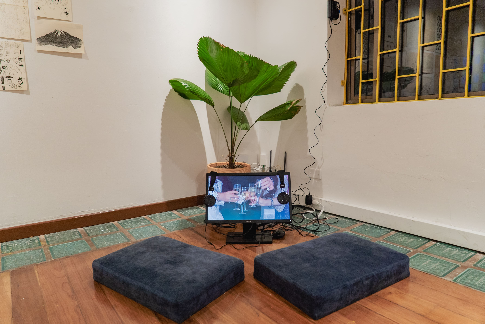
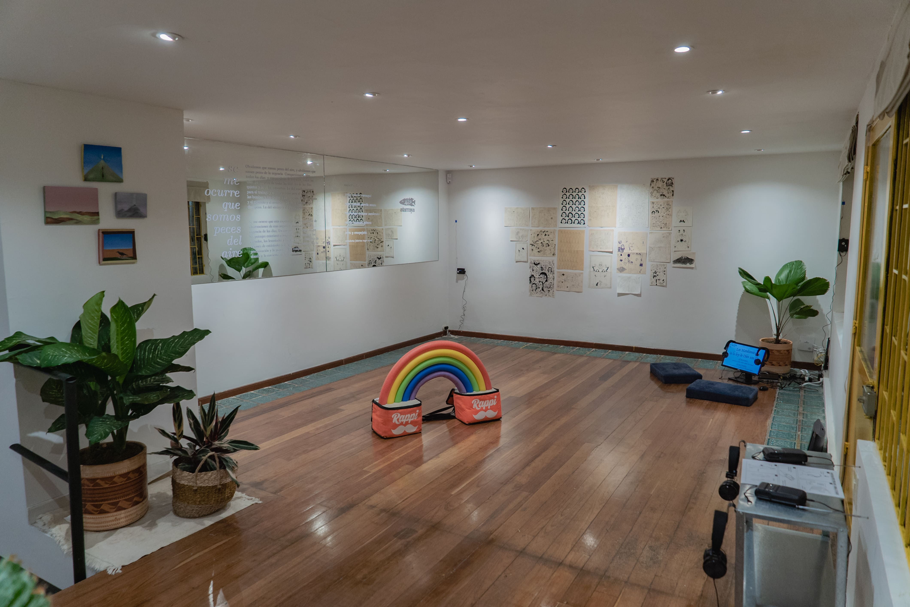
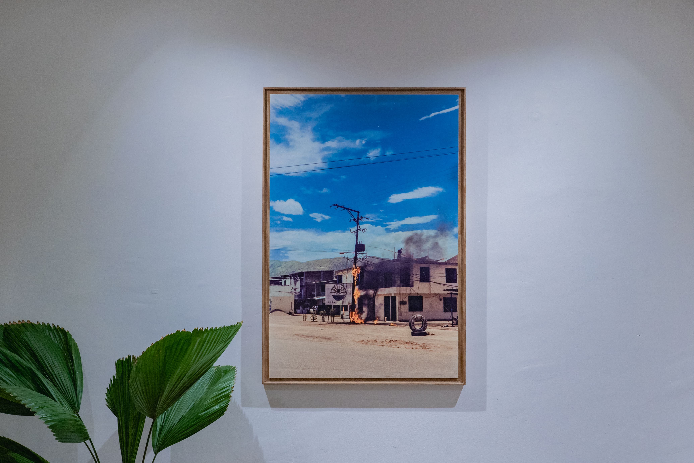
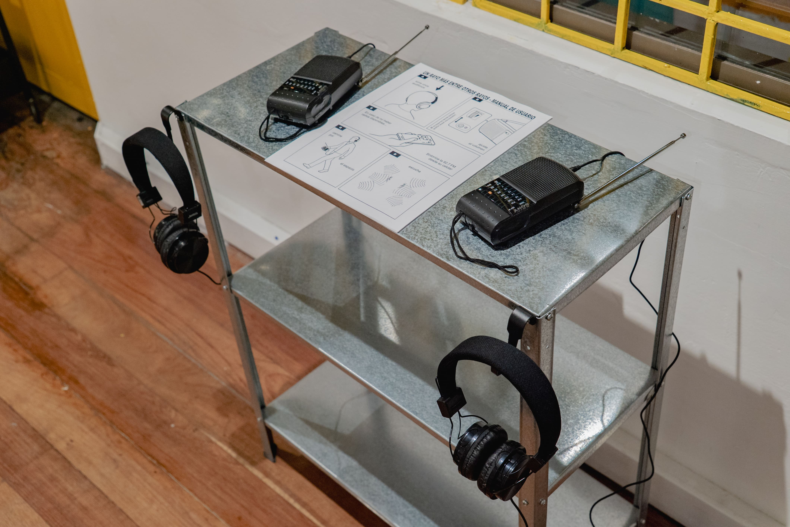
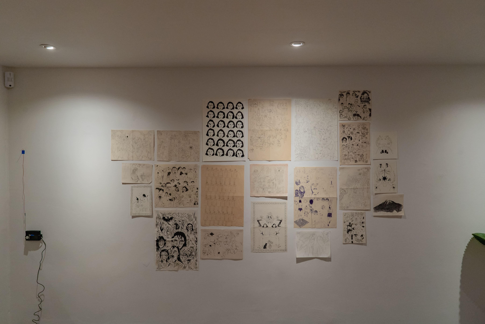
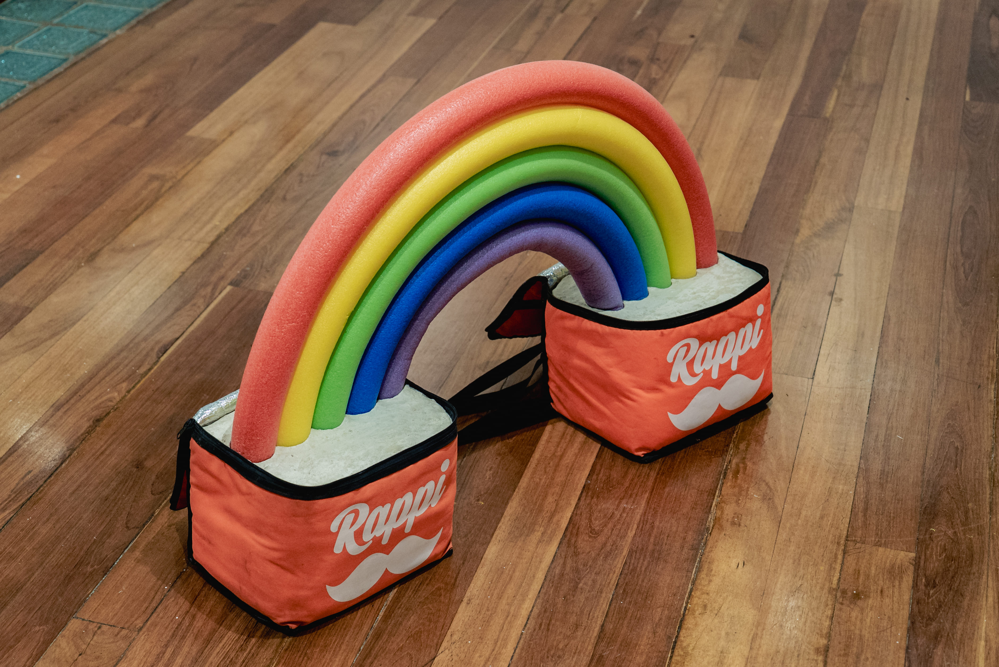
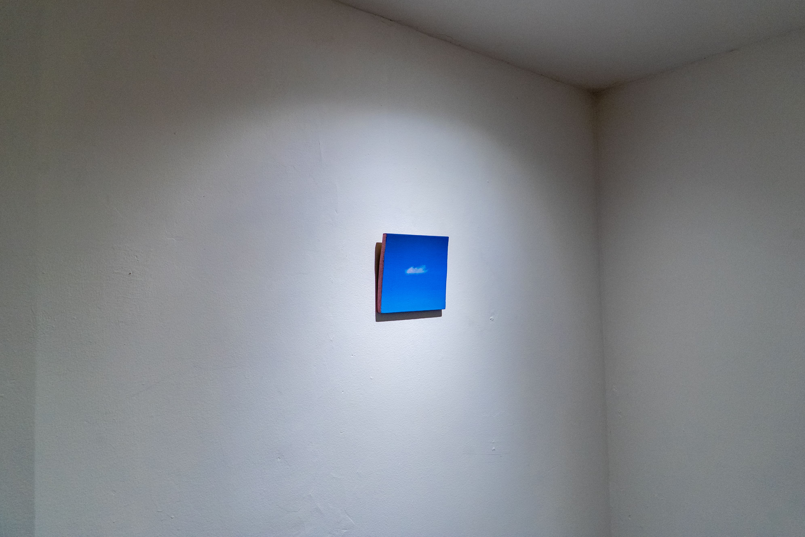
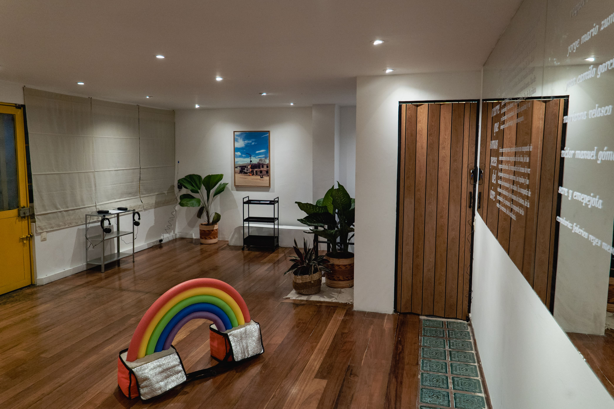

se me ocurre que somos peces del aire curador casa atarraya bogotá, colombia 2026 conocer el trabajo de raquel conocer el trabajo de daniel texto de sala: Se me ocurre que somos peces del aire, como dice Lucrecia Martel*. Lo dice cuando dice que el sonido anuncia al no vacío. Y también dice que ese no vacío anuncia la continuidad entre todas las cosas que experimentan el mismo no vacío, y dice que esa continuidad anuncia una inmersión. Como los peces, dice, que comparten el continuo en el que están inmersos, el agua. Dice, también, que se nos olvida que somos como peces del aire, y que no sabe por qué lo olvidamos, pero creo que deberíamos recordarlo, porque el sabernos inmersos nos hace muy unidos a los otros, muy continuos. Menciona esto cuando habla de la necesidad de observar las cosas del mundo, y de compartir con otrxs lo que encontramos. Es necesario que observemos lo que pasa y que compartamos esas impresiones, dice, como si ese compartir de impresiones resolviera la distancia que aparece cuando olvidamos que somos peces del aire, y, sin querer, interrumpimos la continuidad que nos vincula. Se me ocurre que, además del aire, nos vinculan otras cosas en las que estamos inmersos. Por ejemplo, el instinto, es decir, el hambre y el miedo, la urgencia. También hay un continuo ahí. También esas angustias nos alargan hasta que nos encontramos entre todxs. Y también lo olvidamos, supongo. Olvidamos que somos peces del aire, y olvidamos que somos peces de la urgencia. Compartimos el aire, todos los días, y compartimos la angustia, todos los días. La angustia de todos los días. La de los días quietos y la de los convulsos. La del mucho tiempo para el trabajo y el poco tiempo para el resto. La de las bombas y los drones y los imperios. La de la plata y el mercado y el arriendo. La de la quietud y el desespero. La del vértigo y el desamparo. Se me ocurre que esta exposición es un compartir de observaciones de esas angustias de los días, de las urgencia de los días. Un compartir de formas de ver los paisajes exteriores e interiores, los tupidos y los vaciados, los levantados y los caídos. Un compartir de visiones de catástrofes y de visiones de tristeza, de la precarización y la promesa. Un compartir de lo común y lo corriente, de lo ordinario.







fotos de instalación: Juan Pablo Daza Pulido